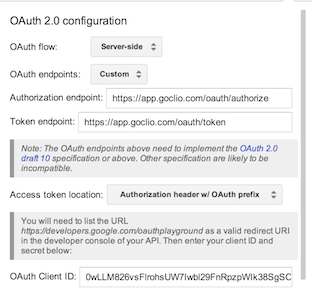
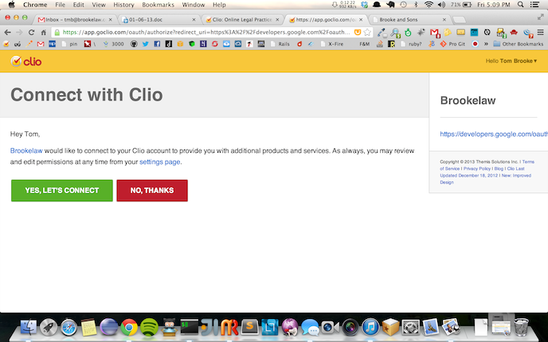
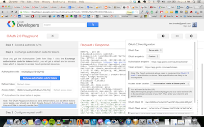
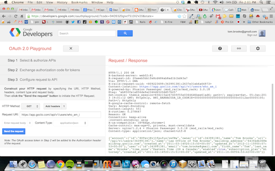

Learning Oauth 2
04 January 2013
Oauth
Learning Oauth2
Part I of Creating an app using the Clio API
The http specification and the REST specification (Representational State Transfer) form the backbone of the web. Through a RESTful interface browsers can communicate with web applications and web applications can communicate with each other. By providing a public API the owner of a web app can allow others to communicate with his app and allow for the exchange of data between his app and the world. Clio has recently published their RESTful API and this is a great boon to developers wanting to integrate with the Clio platform.
Clio is a cloud based law practice management tool developed in Ruby on Rails. The API documentation is located at: Clio API Docs. Since Clio is a legal application designed for lawyers one of the primary considerations is the security of the data. By providing a public API you do not want to allow people to muck around with your data without proper authority and even then you want to keep their access limited. To do this you must utilize a modern authentication system such as OAuth.
The authentication used by Clio is the OAuth2 method and the first step in creating an application that communicates through the API is to get properly authenticated which sets up a secure session between the server and the client. Clio provides sample Ruby code that does this but it would be helpful to get familiar with the workings of OAuth2 before diving in. OAuth2 is a protocal adopted by Google and several others to establish a standardized secure web authentication protocal. The specification is set forth at OAuth
The analogy set out in an introduction to OAuth2 is that of giving a valet key to a parking lot attendant. It grants limited access to your car but not full access to the trunk or whatever. It is the same with OAuth2 authentication. You can grant someone, or in most cases another web site, limited access to the resources on your web site without giving them a password or full access. Clio uses what is know as a Grant type authorization based on the obtaining of an authorization code or token to allow access.
Security, again, is a primary consideration, You are granting access under the covers by allowing a specified web site to issue a RESTful API request to Clio and then returning a json string in response to that request. Only the specified client from the specified web site, with the specified Client Id and Client Secret can do this and only for 10 minutes without renewed authority.
Some times it helps to manually walk through a procedure and one of the easiest ways to start working with OAuth2 is to check out Google's'
We will use the playground to demonstrate exactly how OAuth2 works.
To get started you have to set up the Clio side of things by creating a new app in your Clio account. The Clio documentation describes this process and it is fairly easy to get started. When setting up your application set up:
https://developers.google.com/oauthplayground
As the url for your application since this is the callback url needed to connect Clio and the Google playground together. The Clio side is the server side of your application. When you have this set up you can go to the Google playground and set up the client side of the equation.
To set this up for Clio you must use a custom configuration which you can set up by clicking on the little sprocket on the top right hand side of the screen. This will produce a drop down window entitled OAuth2 configuration. You are creating a Server side configuration so indicate that in the selection window and for OAuth endpoints; you are using custom instead of Google. After you complete those fill in:
Authorization endpoint: https://app.goclio.com/oauth/authorize/
Token endpoint: https://app.goclio.com/oauth/token
Access Token location: Authorization header w/ Bearer prefix

Now put in the OAuth Client ID and Client Secret that you received from Clio
You are now set up and ready to move on to Step 2 where you set up and authorize the API. The way the authorization works is that you present your credentials, which we have just set up with the Client ID and Client Secret, to Clio and if everything is in order Clio issues an access token. This is sent back and by using that token you have access to Clio. The token is limited in that it can only be used by your Web Application to log into Clio and it is only good for 10 minutes.
Lets go over to the left hand side of the screen and beside the Authorize APIs button put in:
https://app.goclio.com/oauth/approval
now click on the Authorize APIs button and viola you're at Clio

Click OK and you will be taken back to Google with the access Token filled in for you:

Now you are ready to go and we can move on to step 3 which allows us to configure a request to the API
under HTTP Method Add Headers (in the little box above the request space) put in Host and for the header value put in: app.goclio.com
Now we are ready to put in our RESTful request - We are performing a simple GET request which we can select in the selection window and let's start with something simple like Who am I
https://app.goclio.com//api/v1/users/who_am_i
If we have done everything right we get back:

{"account":{"id":"8DTsvjEvjIfpufuz/vefRw","owner":{"id":343991381,"name":"Tom Brooke",
"url":"/api/v1/users/343991381"}, "name":"Law Office of Tom Brooke",
"maildrop_address":"643fedb36@maildrop.goclio.com","created_at":"2011-03-14T20:15:50+00:00",
"updated_at":"2012-11-15T00:07:53+00:00"},"user":{"id":343991381,"email":"tom.brooke@gmail.com",
"first_name":"Tom","last_name":"Brooke","time_zone":"Eastern Time (US & Canada)",
"enabled":true,"subscription_plan":"Attorney","created_at":"2011-03-14T20:15:51+00:00",
"updated_at":"2011-10-06T04:53:43+00:00"}}That's me - How cool is that !!
Now let's look up our matters which is only one at this point:
then enter your GET request as a full address ie: https://app.goclio.com//api/v1/matters
And viola we get our response:
{"matters":[{"id":1017058013,"client":{"id":863215887,"name":"Sam May",
"url":"/api/v1/contacts/863215887"},
"display_number":"00001-May","description":"New Matter",
"status":"Open","open_date":"2013-01-04","close_date":null,"pending_date":null,
"location":"","client_reference":"","responsible_attorney":{"id":343991381,"name":"Tom Brooke",
"url":"/api/v1/users/343991381"},"billable":true,
"maildrop_address":"643fedb36+matter1017058013@maildrop.goclio.com",
"created_at":"2013-01-04T19:02:26+00:00","updated_at":"2013-01-04T19:02:26+00:00"}],
"records":1,"limit":1000,"next_offset":1017058013}Now you can go through the Clio routing table ![Routing Table] (http://api-docs.goclio.com/http-routingtable.html) and you can experiment with any query you want. That's it. Of course we will be performing all of this automatically as in the Ruby code provided by Clio or we can write our own code in Ruby, Clojure or whatever. In future posts we'll explore how to set this up using Ruby and create a simple Sinatra application that runs on Heroku and talks to the Clio API
Feel free to leave comments or questions and consider joining our Google Group at: Clio Developer Group where we discuss these things. In the next post we'll put together a Sinatra app that uses the API and authentication we have covered here.